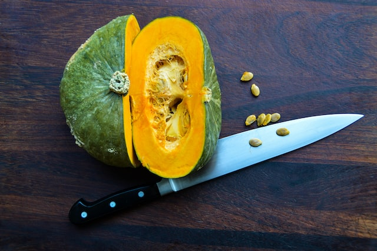
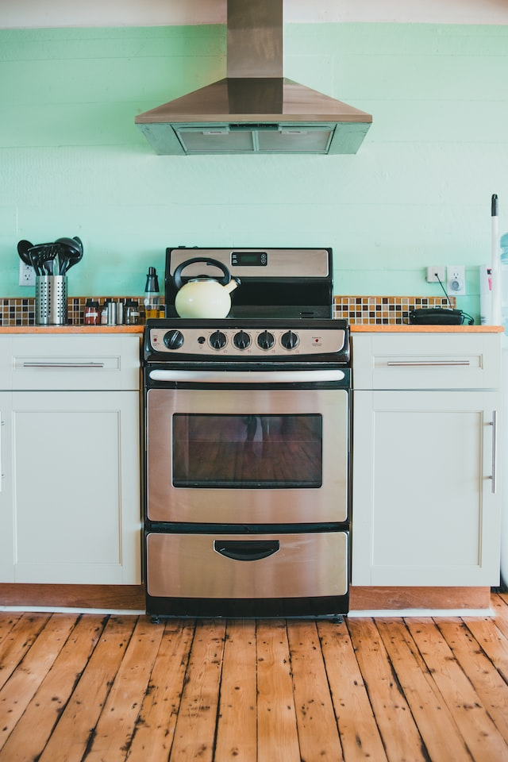
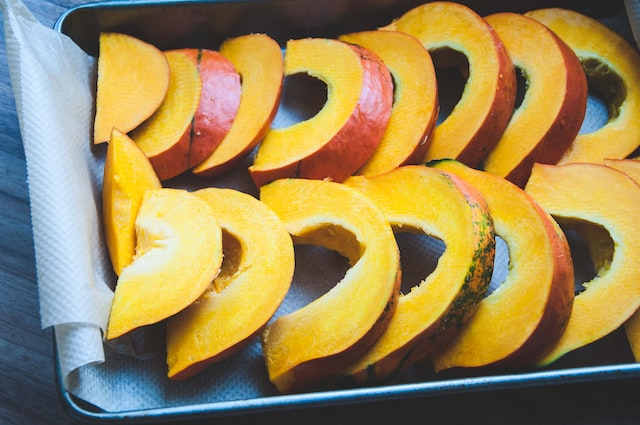
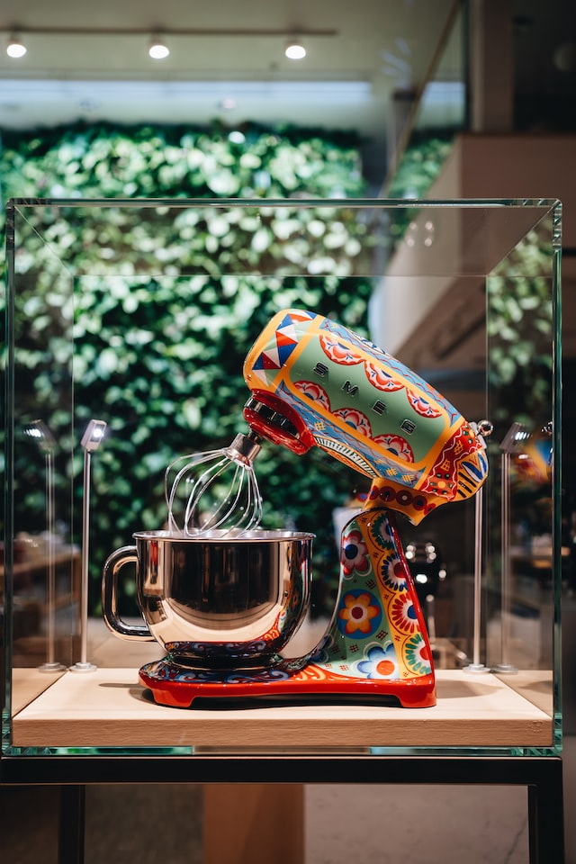

BUTTERNUT SQUASH PUREE

Description
Butternut squash is high in antioxidants, fiber, and vitamins, making it one of the healthiest foods for your infant. Roasting squash in the oven is straightforward; once soft, the orange flesh may be easily scraped from the rough skins. You may use this procedure to substitute any other winter squash.
This recipe is suitable for babies aged 6 months and up.
Ingredients
- 1 small butternut squash (about 1 lb/500 g) 
Steps
- Preheat the oven to 375 degrees Fahrenheit (190 degrees Celsius). Cut the squash in half lengthwise and scoop out and remove the seeds and fibers with a metal spoon. Put the squash in a baking dish large enough to contain both halves, cut-side down. Fill the pan with 12 cup (4 fl oz/125 ml) water. 
- Bake for 45 minutes to 1 hour, or until the squash is extremely soft. Let to cool fully. 
- Scoop out the meat with a metal spoon, discarding the skins. Put the squash to a blender, mixer, or food processor and puree until extremely smooth or chunky, depending on the age and chewing skills of your baby. If necessary, thin the puree with water, breast milk, or formula. 
- Storage Tip: Refrigerate the puree for up to three days in an airtight container, or freeze for up to three months. Spoon into ice cube trays for single servings that melt quickly.